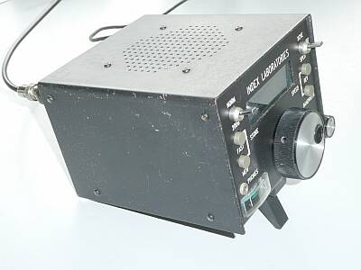
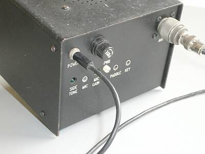
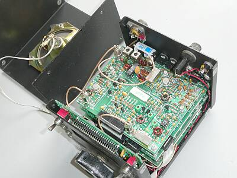
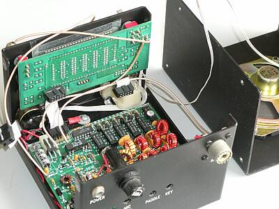
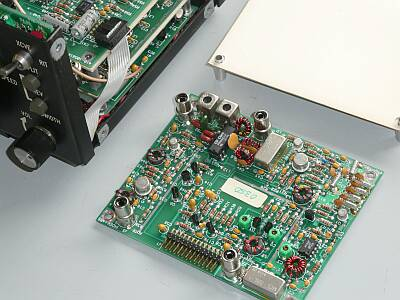
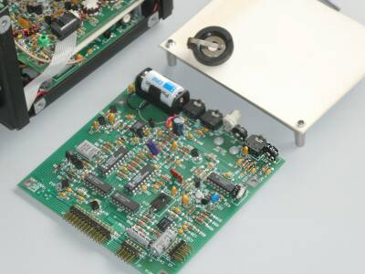
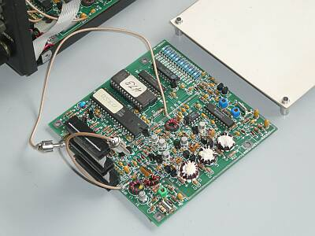
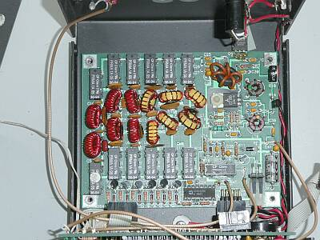

 |
正面やや左から全容
１３．８（Ｗ）ｘ１０．５（Ｈ）ｘ１６（Ｄ）ｃｍ とコンパクト
重量は、２３４０ｇ 軽量感はありません！
むしろ頑強なイメージです |
 |
リアパネルの様子です
アンテナは、Ｍ-Ｒ
ＤＣ電源は一般的なジャックです
ヒューズも標準のφ６．４ｘ３０ｍｍのもの
左から
サイドトーン音量調整、ＭＩＣ入力、ＭＩＣゲイン調整、ＣＷパワー（指でつかめます）、パドル接続（エレキ―内臓）、キー接続 |
 |
上蓋を開けて上から見た中身です
スピーカーは天板に取り付けられています
アナログＶＦＯなら音声出力でドリフトしそうですが、さすがディジタルＶＦＯ
バックアップ電池の交換は、当初より上蓋を外すだけでできる構造になっています
|
 |
4層になった基板、上３枚を取り外したところです
フロントパネル裏に、液晶表示部（ＳＷ類、ロータリーエンコーダ付き）が取り付いています |
 |
一番上に配置されている基板です
後ろに見えているスペーサの上に載せる構造です
受信ＴＯＰ、ミキサ、クリスタルフィルタ、ＩＦアンプ、プロダクト検波まで
送信については、受信共用のクリスタルフィルタ、ミキサ、そしてプリドライバまで
５０～１００ｍＷの送信出力が得られています
いわゆる無線（エキサイタ）部は、この基板１枚です
フィルタは、クリスタル６枚によるもの、基板右奥がそのものです |
 |
ＡＦフィルタ、マイクアンプ、ＡＬＣ、ＡＧＣ、ＡＦオーディオなど
バックアップ電池は、オリジナルはＣＲ２０１６でしたが、長寿命が期待できるＣＲ２に交換しました
電池右上に見えるのが元々ついていた電池ソケット
キー接続端子、パワー調整つまみなど背面に出ている端子、ＶＲは、この基板上に配されています |
 |
コントロール、ＶＣＯ部です
キャリア（ＢＦＯ）信号もこの基板で作られています（５０ＭＨｚ一発発信）
今回の不動の原因の一つは、３枚の基板をつなぐフラットケーブルにありました
左端に見えています
この真ん中のコネクタに接続不良がありました |
 |
ファイナル、ＬＰＦ部です
4層になっている基板の底部で、ケースに取り付いています
ＴＴＬ-ＩＣに見えるのは、リード・リレーです
５０～１００ｍＷの信号を３～５Ｗに増力します
ファイナルは、ＭｏｓＦＥＴで、ＦＨの下、ケースに取り付けられています（放熱都合）
昔流行ったＩＲＦ５１０です
基板上に見えるＴｒは、ドライバです |